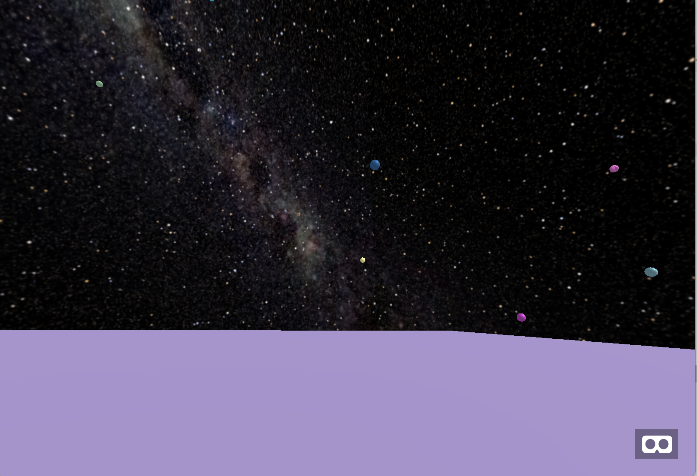

We've made a few changes since last time which include adding some models to planets that we randomly dicate have life and other small things like acceleration in space. At the moment, the user can press down on the screen or on their mouse to move and slowly accelerate up to a certain limit. Since we're in space, if the user lets go of the button, they will stay at that velocity due to momentum. We still need to crank out a few details when it comes to figuring out deceleration however.
Another big change is the addition of game states. When the user first starts out, they're essentially in "interstellar mode" where they can travel the stars. If a user apporaches a planet, they then enter exploration mode where they land onto the planet's surface and can explore from there. The idea here is to make sure we don't load everything at once (because doing that for hundreds of planets can be crazy). At the moment we're just using a simple plane to dictate the surface of the planet but we intend to flesh this out later on. From this, we can generate the surface of a planet given specific properties such as its ability to sustain life and whatnot which is what we'll try to tackle next.
However, a big disclaimer we must put out is that there are still bugs that we need to fix with planes not properly being created when a user reaches close to a planet.
Other big changes happened in the code-end by implementing OOP design patterns for planets, clusters, and even the user's spaceship.